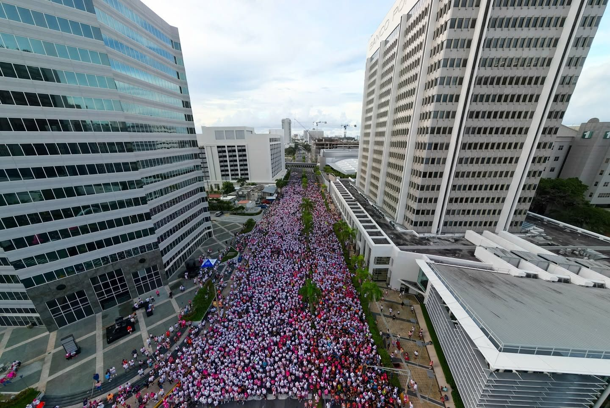
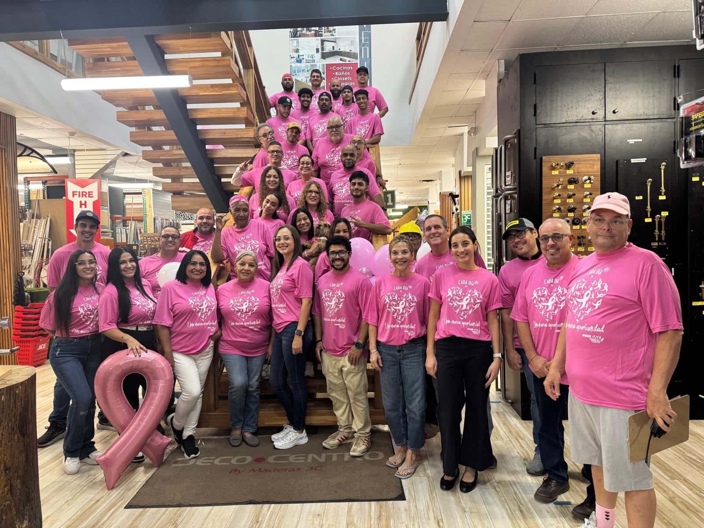
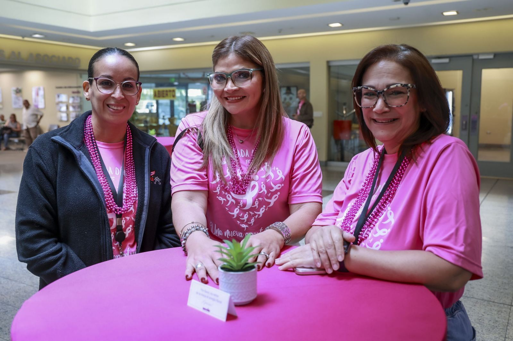
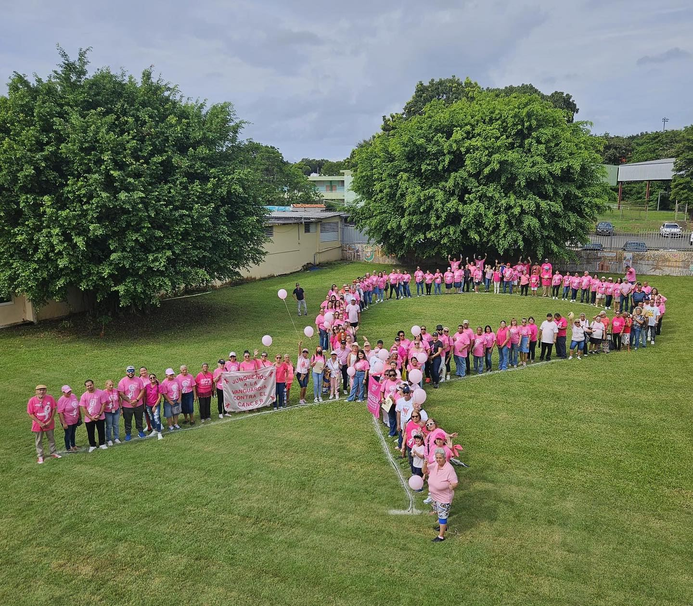

Eventos
Juntas, en cada paso.
Nuestros eventos recaudan fondos para programas en la Isla y, sobre todo, celebran a las sobrevivientes.
Race for the Cure®
El 5K más grande de Puerto Rico.
Más que una carrera competitiva, es un evento donde se celebra la vida. Cada participante corre o camina “En honor a” un ser querido que lucha contra la enfermedad, o “En memoria de” alguien que terminó su batalla.
- 2026: domingo 4 de octubre, Coliseo de Puerto Rico José Miguel Agrelot
- Lema 2026: “En cada paso, juntos por ti”
- Madrina 2026: la periodista Aixa Vázquez
Fotos: Race for the Cure 2025 (Susan G. Komen Puerto Rico) y ediciones anteriores (Alberto Bartolomei).



Pink Day
Un día. Toda la Isla de rosa.
Empresas, agencias de gobierno, escuelas y grupos se visten con la camiseta oficial del Pink Day para crear conciencia y recaudar fondos. “Cada día es una nueva oportunidad.”
- Ordena las camisetas oficiales para tu equipo
- Coordina una charla educativa en tu lugar de trabajo
- Comparte tu foto y etiqueta a @komenpr
Pink Gala
Una noche para recordar.
Desde “The Secret Garden” (2024) y “Pearls of Hope” (2025) hasta “Las Mil y Una Noches” (2026), la Pink Gala reúne a la comunidad en nuestra noche más elegante del año.